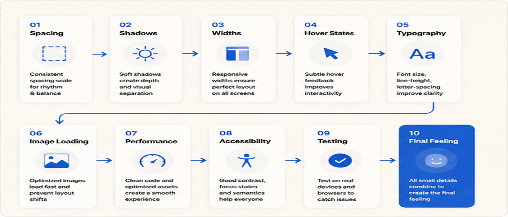
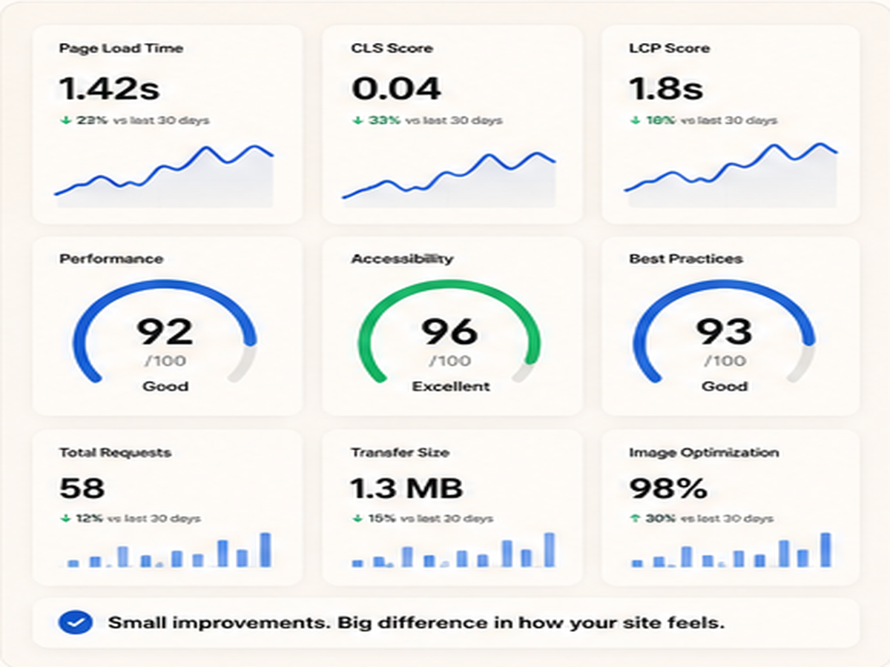
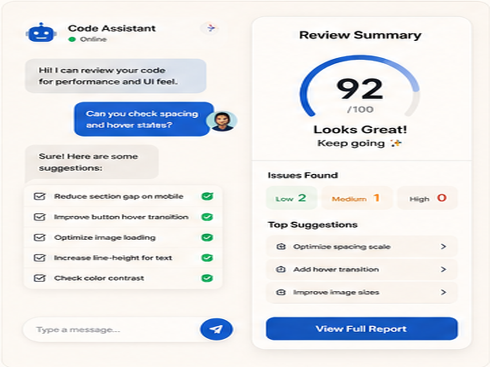
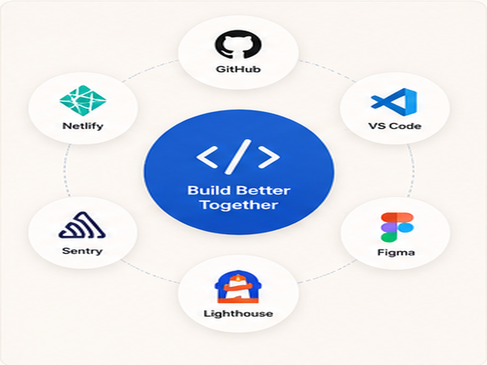

Small code choices change how the site feels.
A website can have a good design, but still feel unfinished if the small code details are weak. Spacing, card height, border radius, image fitting, and hover feedback all affect the final impression. Documentation like MDN Web Docs is useful when you want to understand how CSS and browser behavior really work.
These small details are not decoration only. They decide whether the page feels smooth, stable, responsive, and professional.

Website layout code preview
Spacing and layout settings
Hover state examplesSpacing is part of the code, not only design.
Good spacing needs consistent CSS rules. If every section uses random padding, margin, and gaps, the page starts to feel messy. Use repeatable spacing values so the whole website feels controlled.
Guides from web.dev can help you understand layout, performance, responsiveness, and page experience. The better your spacing system is, the easier it becomes to keep all pages consistent.
Responsive width decides mobile quality.
A design can look good on desktop but break on phone if the width rules are not controlled. Images, cards, headings, grids, and buttons need clear responsive behavior.
Use simple rules first: one-column mobile layouts, smaller headings, shorter gaps, and image boxes that do not overflow the screen.
Use consistent section width
Keep the main container controlled with max-width and side padding.
Make images predictable
Use aspect ratio, object-fit, and clean image sizes so layouts do not jump.
Check every hover state
Buttons, cards, and links should react smoothly without feeling heavy or random.
Performance also affects the feeling.
A beautiful page can feel weak if images load slowly or the layout jumps while loading. Image compression, lazy loading, proper dimensions, and clean CSS all improve the experience.
Tools like PageSpeed Insights can help check loading, responsiveness, and performance issues. The goal is not only a high score. The goal is a smoother real user experience.

Responsive width settingsThe final idea.
Before calling a page finished, ask: does every detail feel intentional on desktop and mobile? If spacing, shadows, image sizes, links, and buttons feel inconsistent, the page may still feel unfinished.
Small code decisions create the final feeling because users experience the details, even when they do not know what CSS rule created them.